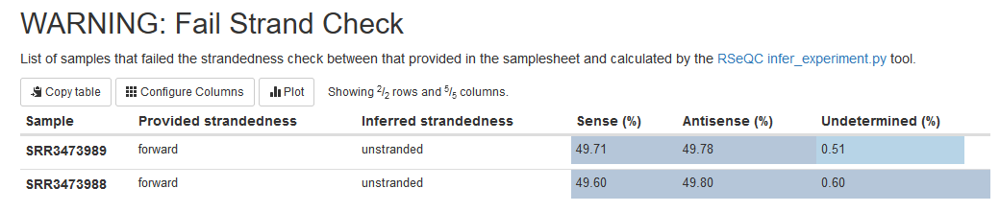

2.2. Why and how to use a parameters file
- Investigate a warning message provided by an nf-core pipeline run
- Use the
nextflow logcommand to trace processes cached in the work directory - Observe how a process is implemented at the task level
- Rerun a workflow using a parameter file to specify pipeline-specific parameters
- Understand the use of the parameter file for reproducible and transparent research
In Lesson 1.3.7, we learned that parameters are values that can be set by the user and used to control the behaviour of a workflow or process within the workflow. Within the Nextflow code base, they are defined by the params{} scope. They can be suppled as either a --parameter flag to the run command or inside a parameter file.
In the previous lesson we supplied pipeline parameters as flags in our run command (--). In this lesson we will add another parameter to our run command and rerun the pipeline using a parameter file.
2.2.1. Why should I use a parameters file?
Using a parameter file is advantageous in a number of ways:
- Code readability: By using a params file, you can ensure your run command is readable by storing all your parameters customisations in one place and easily make changes or additions as needed.
- Reproducibility: You can save the exact parameters used for a particular run of the pipeline in a parameters file. This makes it easier to reproduce the same results and share your pipeline parameters with collaborators.
- Flexibility: If you need to run the same nf-core pipeline with slightly different settings, using a parameters file makes it easier to make those changes without modifying the run command each time.
- Version control: Using version controlled parameter files allows you to track changes to your pipeline configuration over time and revert to previous versions if needed.
2.2.2. Troubleshoot the warning message
While our pipeline completed successfully, there were a couple of warning messages that may be cause for concern:
-[nf-core/rnaseq] Pipeline completed successfully with skipped sampl(es)-
-[nf-core/rnaseq] Please check MultiQC report: 2/2 samples failed strandedness check.-
Completed at: 21-Apr-2023 03:58:56
Duration : 9m 16s
CPU hours : 0.3
Succeeded : 66The first warning message isn’t very descriptive (see this pull request). You might come across issues like this when running nf-core pipelines, too. Bug reports and user feedback is very important to open source software communities like nf-core. If you come across any issues submit a GitHub issue or start a discussion in the relevant nf-core Slack channel so others are aware and it can be addressed by the pipeline’s developers.
➤ Take a look at the MultiQC report, as directed by the second message. You can find the MultiQC report in the Lesson-2.1/ directory:
ls -la Lesson-2.1/multiqc/star_salmon/total 1468
drwxrwxr-x 4 ubuntu ubuntu 4096 Apr 12 04:13 .
drwxrwxr-x 3 ubuntu ubuntu 4096 Apr 12 04:13 ..
drwxrwxr-x 2 ubuntu ubuntu 4096 Apr 12 04:13 multiqc_data
drwxrwxr-x 5 ubuntu ubuntu 4096 Apr 12 04:13 multiqc_plots
-rw-rw-r-- 1 ubuntu ubuntu 1483297 Apr 12 04:13 multiqc_report.htmlOpen the multiqc_report.html the file navigator panel on the left side of your VS Code window by clicking on it. Then open the rendered html file using the Live Server extension:
Ctrl+Shift+Pto open the command palette- Select
Live Server: Open with Live Serverto open html file in your browser window.
Take a look a the section labelled WARNING: Fail Strand Check

The warning we have received is indicating that the read strandedness we specified in our samplesheet.csv and inferred strandedness identified by the RSeqQC process in the pipeline do not match. Look’s like I have incorrectly specified strandedness as forward in the samplesheet.csv when our raw reads actually show an equal distribution of sense and antisense reads (my mistake! 😑).
For those not familiar with RNAseq data, incorrectly specified strandedness may negatively impact the read quantification step (process: Salmon quant) and give us inaccurate results. So, let’s clarify how the Salmon quant process is gathering strandedness information for our input files by default and find a way to address this with the parameters provided by the nf-core/rnaseq pipeline.
2.2.3. Identify the run command for a process
To observe exactly what command is being run for a process, we can attempt to infer this information from a process main.nf script in the modules/ directory. However, given all the different parameters that may be applied at the process level, this may not be very clear.
➤ Take a look at the Salmon quant main.nf file:
cat nf-core-rnaseq-3.11.1/workflow/modules/nf-core/salmon/quant/main.nfIt is very hard to see what is actually happening, given all the different variables, conditional arguments, and loops inside this script. Above the script block we can see strandedness is being applied using a few different conditional arguments. Instead of trying to infer how the $strandedness variable is being defined and applied to the process, let’s use the hidden process files saved to the work/ directory.
Remember that the pipeline’s results are cached in the work directory. In addition to the cached files, each task execution directories inside the work directory contains a number of hidden files:
.command.sh: The command script run for the task..command.run: The command wrapped used to run the task..command.out: The task’s standard output log..command.err: The task’s standard error log..command.log: The wrapper execution output..command.begin: A file created as soon as the job is launched..exitcode: A file containing the task exit code (0 if successful)
Recall from lesson 1.1.9 that the nextflow log command has multiple options to facilitate the queries and is especially useful while debugging a pipeline and while inspecting pipeline execution metadata.
To understand how Salmon quant is interpreting strandedness, we’re going to use this command to track down the hidden .command.sh scripts for each Salmon quant task that was run. This will allow us to find out how Salmon quant handles strandedness and if there is a way for us to override this.
➤ Use the Nextflow log command to reveal information about previously executed pipelines:
nextflow logThis will print a list of executed pipelines:
TIMESTAMP DURATION RUN NAME STATUS REVISION ID SESSION ID COMMAND
2023-04-21 00:30:30 - friendly_montalcini - f421ddc35d 685266bb-b99b-4945-9a54-981e8f4b1b07 nextflow run nf-core-rnaseq-3.11.1/workflow/main.nf --help
2023-04-21 00:40:58 9m 16s mighty_swanson OK f421ddc35d 055e7b7f-c3ea-4fd9-a915-02343099939e nextflow run nf-core-rnaseq-3.11.1/workflow/main.nf --input samplesheet.csv -profile singularity --fasta /home/ubuntu/session2/materials/mm10_reference/mm10_chr18.fa --gtf /home/ubuntu/session2/materials/mm10_reference/mm10_chr18.gtf --star_index /home/ubuntu/session2/materials/mm10_reference/STAR --max_memory 6.GB --max_cpus 2 --outdir Lesson-1➤ All recent runs will be listed in this file, with the most recent at the bottom. Run the command below after filling in your unique run name for our previous lesson. For example:
nextflow log mighty_swansonThat command will list out all the work subdirectories for all processes run. Recall from Session 1 that the actual command issued by a processes are all recorded in hidden script files called .command.sh within the execution process directory. One way of observing the actual run commands issued by the workflow is to view these command scripts.
But how to find them? 🤔
➤ Let’s add some custom bash code to query a Nextflow run with the run name from the previous lesson. First, save your run name in a bash variable. For example:
run_name=mighty_swanson➤ And let’s save the tool of interest (salmon) in another bash variable to pull it from a run command:
tool=salmon➤ Next, run the following bash command:
nextflow log ${run_name} | while read line;
do
cmd=$(ls ${line}/.command.sh 2>/dev/null);
if grep -q $tool $cmd;
then
echo $cmd;
fi;
done That will list all process .command.sh scripts containing ‘salmon’. There are a few different processes that run Salmon in the workflow. We are looking for Salmon quant which performs the read quantification. For example:
/home/ubuntu/session2/work/50/d4462ece237213ace901a779a45286/.command.sh
/home/ubuntu/session2/work/2f/11774c859f9f55f816b754a65290a7/.command.sh
/home/ubuntu/session2/work/bc/0478d8de4d1c6df1413c50f4bffcb1/.command.sh
/home/ubuntu/session2/work/af/57d1741b614927225fe6381333d615/.command.sh
/home/ubuntu/session2/work/e6/6a644b0d85f03ec91cd2efe5a485d2/.command.sh
/home/ubuntu/session2/work/7d/ff697b987403d2f085b8b538260b67/.command.sh
/home/ubuntu/session2/work/3e/1b7b0f03c7c7c462a4593f77be544e/.command.sh
/home/ubuntu/session2/work/31/5e6865dbbbb164a87d2254b68670fa/.command.sh
/home/ubuntu/session2/work/79/93034bd48f5a0de82e79a1fd12f6ac/.command.sh
/home/ubuntu/session2/work/ca/bbfba0ea604d479bdc4870e9b3b4ce/.command.sh
/home/ubuntu/session2/work/ec/0a013bfb1f96d3c7170137262294e7/.command.sh
/home/ubuntu/session2/work/b7/37428bc5be1fd2c34e3911fb827334/.command.sh
/home/ubuntu/session2/work/57/a18fcea6a06565b14140ab06a3d077/.command.shCompared with the salmon quant main.nf file, we get a lot more fine scale details from the .command.sh process scripts:
Looking at the nf-core/rnaseq Parameter documentation and Salmon documentation, we found that we can override this default using the --salmon_quant_libtype U parameter to indicate our data is unstranded and override samplesheet.csv input.
If we want to get rid of the warning message Please check MultiQC report: 2/2 samples failed strandedness check, we’ll have to change the strandedness fields in our samplesheet.csv. Keep in mind, doing this will invalidate the pipeline’s cache and cause the pipeline to run from the beginning.
2.2.4. Write a parameter file
Nextflow accepts either yaml or json formats for parameter files. Any of the pipeline-specific parameters can be supplied to a Nextflow pipeline in this way. We wrote a parameter file in json format in lesson 1.3.7, let’s use yaml format this time.
Fill in the parameters file below and save as workshop-params.yaml. This time, include the --salmon_quant_libtype U parameter.
💡 YAML formatting tips!
- strings need to be inside double quotes
- booleans (true/false) and numbers do not require quotes
input: ""
outdir: ""
fasta: ""
gtf: ""
star_index: ""
salmon_index: ""
skip_markduplicates:
save_trimmed:
save_unaligned:
salmon_quant_libtype: "" input: "samplesheet.csv"
outdir: "Lesson-2.2"
fasta: "/cvmfs/data.biocommons.aarnet.edu.au/training_materials/SIH_training/UnlockNfcore_0523/mm10_reference/mm10_chr18.fa"
gtf: "/cvmfs/data.biocommons.aarnet.edu.au/training_materials/SIH_training/UnlockNfcore_0523/mm10_reference/mm10_chr18.gtf"
star_index: "/cvmfs/data.biocommons.aarnet.edu.au/training_materials/SIH_training/UnlockNfcore_0523/mm10_reference/STAR"
salmon_index: "/cvmfs/data.biocommons.aarnet.edu.au/training_materials/SIH_training/UnlockNfcore_0523/mm10_reference/salmon-index"
skip_markduplicates: true
save_trimmed: true
save_unaligned: true
salmon_quant_libtype: "U"2.2.5. Apply the parameter file
➤ Once your params file has been saved, run:
nextflow run nf-core-rnaseq-3.11.1/workflow/main.nf \
--max_memory 6.GB \
--max_cpus 2 \
-profile singularity \
-params-file workshop-params.yaml \
-resume The number of pipeline-specific parameters we’ve added to our run command has been significantly reduced. The only -- parameters we’ve provided to the run command relate to how the pipeline is executed on our instances. These resource limits won’t be applicable to our imaginary collaborator who will run the pipeline on a different infrastructure.
As the workflow runs a second time, you will notice 4 things:
- The command is much tidier thanks to offloading some parameters to the params file
- The
-resumeflag. Nextflow has lots of run options including the ability to use cached output! - Some processes will be pulled from the cache. These processes remain unaffected by our addition of a new parameter.
- This run of the pipline will complete in a much shorter time.
-[nf-core/rnaseq] Pipeline completed successfully with skipped sampl(es)-
-[nf-core/rnaseq] Please check MultiQC report: 2/2 samples failed strandedness check.-
Completed at: 21-Apr-2023 05:58:06
Duration : 1m 51s
CPU hours : 0.3 (82.2% cached)
Succeeded : 11
Cached : 55- A parameter file can be used to specify input parameters for any Nextflow workflow.
- Specify parameter files in a workflow run command using the
-params-fileflag. - Parameter files can be written in YAML or JSON file formats.
All materials copyright Sydney Informatics Hub, University of Sydney